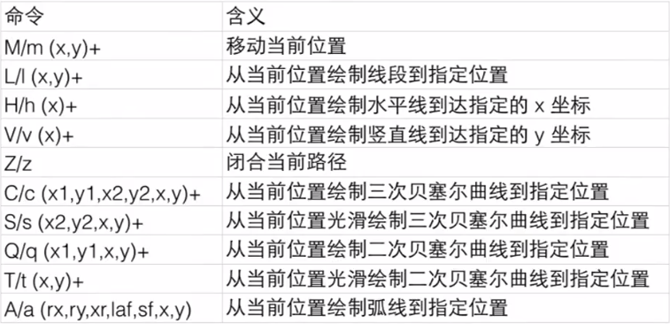
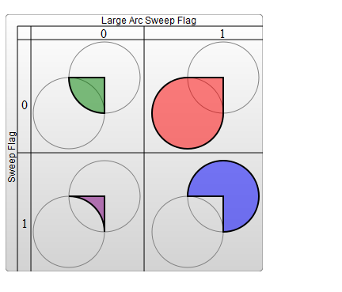
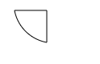
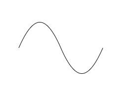
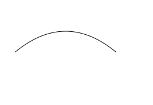

path字符串
路径(path)是一个非常强大的绘图工具，可以用path元素绘制矩形（直角矩形或者圆角矩形）、圆形、椭圆、折线形、多边形，以及一些其他的形状，例如贝塞尔曲线、2次曲线等曲线
SVG路径最常用的属性是d属性，即path字符串，用来定义path元素的路径形状
属性d的值是一个“命令+参数”的序列，每一个命令都用一个关键字母来表示。参数之间可以用空格或逗号隔开，有一种情况例外，就是下一个数值是负数
d 一个点集数列以及其它关于如何绘制路径的信息
<path d="M 20 230 Q 40 205, 50 230 T 902 30"/>
下面是path字符串中的命令汇总

Path命令有如下规律
1、区分大小写：每一个命令都有两种表示方式，一种是用大写字母，表示采用绝对位置。另一种是用小写字母，表示采用相对位置
2、最后的参数表示最终要到达的位置
3、上一个命令结束的位置就是下一个命令开始的位置
4、命令可以重复参数表示重复执行同一条命令
5、因为属性d采用的是用户坐标系统，所以不需标明单位
直线路径
<path>元素里有5个画直线的命令，顾名思义，直线命令就是在两个点之间画直线
首先是“Move to”命令，M需要两个参数，分别是需要移动到的点的x轴和y轴的坐标。假设，画笔当前位于一个点，在使用M命令移动画笔后，只会移动画笔，但不会在两点之间画线。因为M命令仅仅是移动画笔，但不画线。所以M命令经常出现在路径的开始处，用来指明从何处开始画
M x y (or m dx dy)
能够真正画出线的命令有三个（M命令是移动画笔位置，但是不画线），最常用的是“Line to”命令，L需要两个参数，分别是一个点的x轴和y轴坐标，L命令将会在当前位置和新位置（L前面画笔所在的点）之间画一条线段
L x y (or l dx dy)
另外还有两个简写命令，用来绘制平行线和垂直线。H，绘制平行线。V，绘制垂直线。这两个命令都只带一个参数，标明在x轴或y轴移动到的位置，因为它们都只在坐标轴的一个方向上移动
H x (or h dx)
V y (or v dy)
“闭合路径命令”Z命令会从当前点画一条直线到路径的起点，尽管不总是需要闭合路径，但是它还是经常被放到路径的最后。另外，Z命令不用区分大小写
Z (or z)
下面使用绝对位置来绘制不闭合的直线
<path d="M 10 10 H 60 V 50" fill="transparent" stroke="black"></path>
如果使用相对位置，则如下所示
<path d="m 10 10 h 50 v 40" fill="transparent" stroke="black"></path>
如果使用Z，则可以自动闭合路径
<path d="M 10 10 H 60 V 50 Z" fill="transparent" stroke="black"></path>
弧形路径
基本上，弧形可以视为圆形或椭圆的一部分。假设，已知椭圆形的长轴半径和短轴半径，另外已知两个点（它们的距离在圆的半径范围内），这时有两个路径可以连接这两个点。每种情况都可以生成出四种弧形。所以，为了保证创建的弧形唯一，A命令需要用到比较多的参数
A rx ry x-axis-rotation large-arc-flag sweep-flag x y
a rx ry x-axis-rotation large-arc-flag sweep-flag dx dy
弧形命令A的前两个参数分别是x轴半径和y轴半径，第三个参数x-axis-rotation表示弧形的旋转情况
第四个参数large-arc-flag决定弧线是大于还是小于180度，0表示小角度弧，1表示大角度弧
第五个参数sweep-flag表示弧线的方向，0表示从起点到终点沿逆时针画弧，1表示从起点到终点沿顺时针画弧
下面的例子展示了这四种情况
<path d="M80 80
A 45 45, 0, 0, 0, 125 125
L 125 80 Z" fill="green"/>
<path d="M230 80
A 45 45, 0, 1, 0, 275 125
L 275 80 Z" fill="red"/>
<path d="M80 230
A 45 45, 0, 0, 1, 125 275
L 125 230 Z" fill="purple"/>
<path d="M230 230
A 45 45, 0, 1, 1, 275 275
L 275 230 Z" fill="blue"/>

下面使用直线和弧线命令实现一小段圆弧
<path d="M 10 10 H 50 V 50 A 50 50 0 0 1 10 10" fill="transparent" stroke="black"></path>

贝塞尔曲线
SVG支持三次贝塞尔曲线和二次贝塞尔曲线两种形式
【三次贝塞尔曲线】

三次贝塞尔曲线需要定义一个点和两个控制点，所以用C命令创建三次贝塞尔曲线，需要设置三组坐标参数
C x1 y1, x2 y2, x y (or c dx1 dy1, dx2 dy2, dx dy)
这里的最后一个坐标(x,y)表示的是曲线的终点，另外两个坐标是控制点，(x1,y1)是起点的控制点，(x2,y2)是终点的控制点。控制点描述的是曲线起始点的斜率，曲线上各个点的斜率，是从起点斜率到终点斜率的渐变过程
可以将若干个贝塞尔曲线连起来，从而创建出一条很长的平滑曲线。通常情况下，一个点某一侧的控制点是它另一侧的控制点的对称（以保持斜率不变）。这样，可以使用一个简写的贝塞尔曲线命令S
S x2 y2, x y (or s dx2 dy2, dx dy)
S命令可以用来创建与之前那些曲线一样的贝塞尔曲线，但是，如果S命令跟在一个C命令或者另一个S命令的后面，它的第一个控制点，就会被假设成前一个控制点的对称点。如果S命令单独使用，前面没有C命令或者另一个S命令，那么它的两个控制点就会被假设为同一个点
<path d="M10 80 C 40 10, 65 10, 95 80 S 150 150, 180 80" stroke="black" fill="transparent"/>

【二次贝塞尔曲线】
另一种可用的贝塞尔曲线是二次贝塞尔曲线Q，它比三次贝塞尔曲线简单，只需要一个控制点，用来确定起点和终点的曲线斜率。因此它需要两组参数，控制点和终点坐标
Q x1 y1, x y (or q dx1 dy1, dx dy)
<path d="M10 80 Q 95 10 180 80" stroke="black" fill="transparent"/>

就像三次贝塞尔曲线有一个S命令，二次贝塞尔曲线有一个差不多的T命令，可以通过更简短的参数，延长二次贝塞尔曲线
T x y (or t dx dy)
快捷命令T会通过前一个控制点，推断出一个新的控制点。这意味着，在第一个控制点后面，可以只定义终点，就创建出一个相当复杂的曲线。需要注意的是，T命令前面必须是一个Q命令，或者是另一个T命令，才能达到这种效果。如果T单独使用，那么控制点就会被认为和终点是同一个点，所以画出来的将是一条直线
虽然三次贝塞尔曲线拥有更大的自由度，但是两种曲线能达到的效果总是差不多的。具体使用哪种曲线，通常取决于需求，以及对曲线对称性的依赖程度